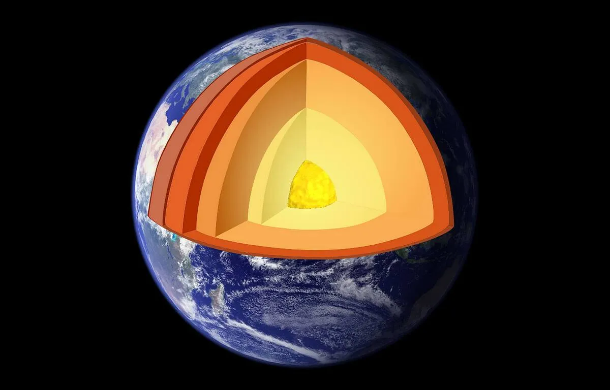
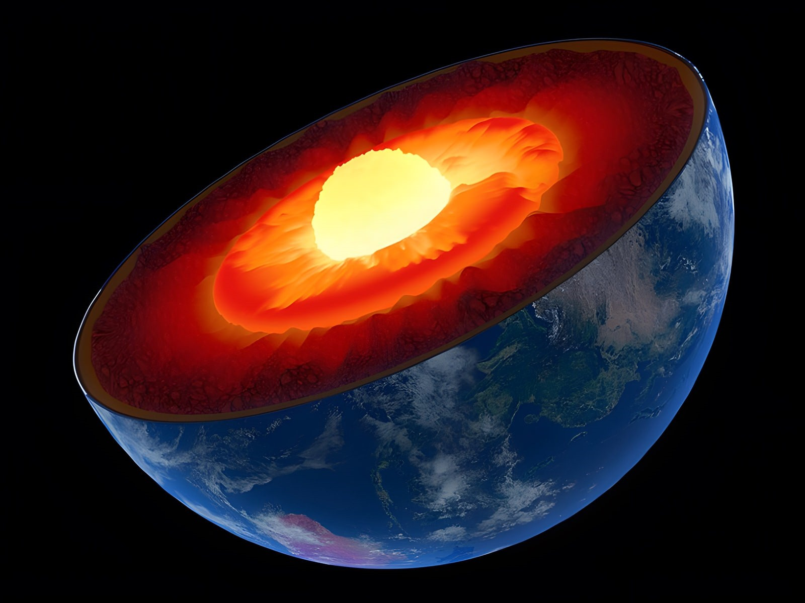

La Terre est donc structurée en différentes couches:

La croûte terrestre
En surface nous retrouvons la croûte terrestre, un lieu familier puisque vous êtes en ce moment même sur cette dernière. L’épaisseur de cette couche solide varie de 5 à 10 km pour celle océanique et a une moyenne de 30 km pour la croûte continentale. Elle représente moins de 1 deux centième du rayon de la Terre qui mesure 6371 km ce qui en fait, à l’échelle de la Terre, une mince pellicule. C’est une autre histoire à l’échelle humaine lorsque l’on sait que le trou le plus profond jamais effectué par l’homme, le forage de Kola situé au nord-ouest de la Russie, ne fait “que” 12 km de profondeur !Du point de vue de la composition chimique la croûte est principalement formé d’oxygène (47%), de silicium (28 %), d’aluminium (8%), de fer (5%), de calcium (3,6%), de sodium (2,8%), de potassium (2,6%) et de magnésium ( 2,1%). À l’état naturel ces éléments s’associent donnant ainsi des minéraux ( quartz, albite, muscovite, etc…) qui eux-même vont s’associer pour donner des roches. L’aspect de ces roches varient énormément selon la composition et la taille des cristaux qui la composent.Le passage de la croûte au manteau se situe le long de la discontinuité de Mohorovičić (ou Moho), liée à une variation brusque de la vitesse des ondes sismiques la traversant.
Le manteau

Entre 70 et 2885 km de profondeur on retrouve donc le manteau, lui aussi solide. Bien que sa température soit extrêmement élevée ( elle varie de 1000°C à 3000°C ) la pression est un facteur qui augmente la température de fusion des roches (normalement entre 800°C et 1300°C) ce qui empêche la fusion de celles-ci.
Le noyau
Le noyau se subdivise en deux couche:
On y retrouve fer et nickel, deux éléments très dense, et donc très lourds, qui ont coulés par gravité au centre de la Terre.